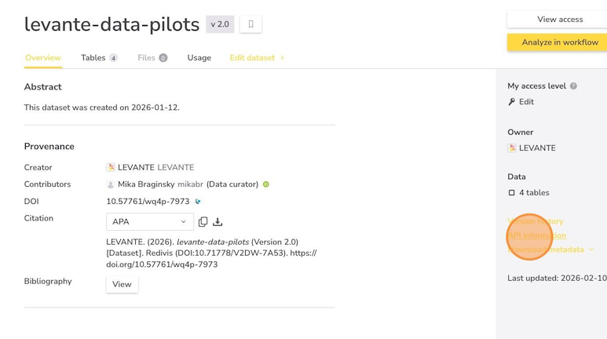
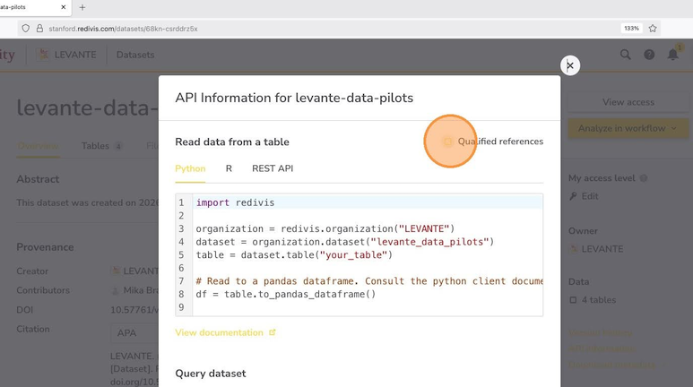

R package for accessing LEVANTE data. Some useful links:
- An overview of the LEVANTE project.
- Details about LEVANTE’s scoring and psychometrics.
- Details about the LEVANTE child tasks.
- How to access the LEVANTE data. Prior to completing the steps described at this link, you only have access to an example dataset with toy data.
- Data browser. You can browse scored and trial level task public data using our data browser. If you are a partner with access to additional datasets on Redivis, you will also be able to load and browse those datasets on the data browser.
Installation
#install.packages(“devtools”) # if you need the devtools package, uncomment this line
devtools::install_git(url="https://github.com/levante-framework/rlevante")Usage
A collection of “get” functions to acquire LEVANTE data. For example, use get_scores to download scored cognitive task data.
scores <- get_scores(data_source = "levante-data-example:d0rt", version = "current")Accessing datasets and codebooks
Permission to access the data is granted via Redivis, a data-sharing platform used for all LEVANTE datasets. Individuals seeking to access any LEVANTE data must create an account on Redivis and sign our data use agreement.
Datasets available to the public include levante-data-pilots and levante-example-data. If you are a partner with access to your own data in a private repository, see this page for information about how to set up data access.
Once you have access to a dataset on Redivis, you can use rlevante to read the data directly into R. Please see our rlevante user walkthrough for more information and examples.
Reference identifiers
In addition to its name, each dataset has a reference ID. While not required, specifying this ID is more stable for your code than specifying dataset names, because dataset names can easily be edited.
To find and use a dataset’s reference ID, follow these steps:
- Go to your dataset’s page on Redivis. For example, the link to our publicly available pilot data release is https://stanford.redivis.com/datasets/68kn-csrddrz5x. Once there, click on “API Information” in the right navigation panel.

- On the pop-up, check the box in the upper right hand corner for “Qualified references.”

- Record the string used to specify the dataset, including both its name (“levante_data_pilots”“) and reference ID (“68kn”). In rlevante functions, this string can be used as an argument to identify this dataset (e.g., get_participants(data_source = “levante_data_pilots:68kn”)).